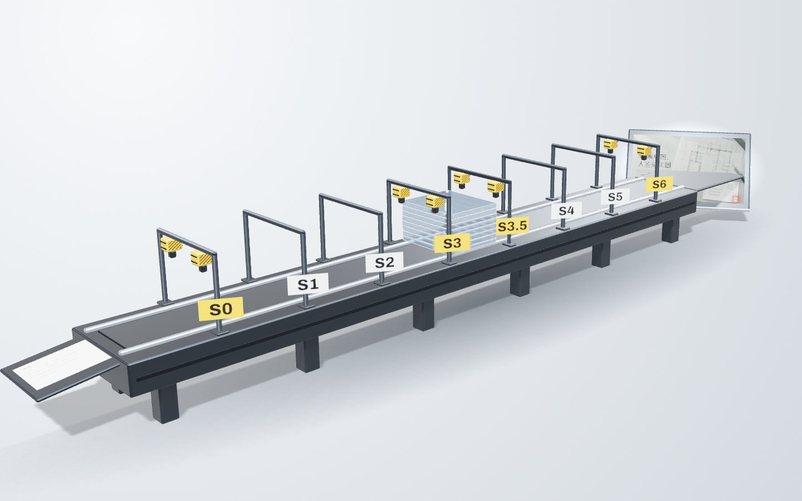
这里是一台八工位的机器：需求从左进，页面从右出。
句末上标是可信度：高 中 未验证。悬停可看来源。
第一个成品：外部评分从 2 分到 4 分
第一个成品是一页行业讲解页。它用相机在一张图纸上移动的形态，不是纵向堆叠的长页。
评分人不看过程，只看页面。
修改轮做了 9 项必改项，截图集 26 张。与上一个项目相比，三处决定不同：形态、材质与首屏、可信度表达。
盲评 1 先改的三处，与成品的外部依赖
- 先改三处：短图幅下半空、s5 符号过大且来源不可见、总览空方块。
- 依赖：GSAP 3.13.0、three 0.186.0、Google Fonts。
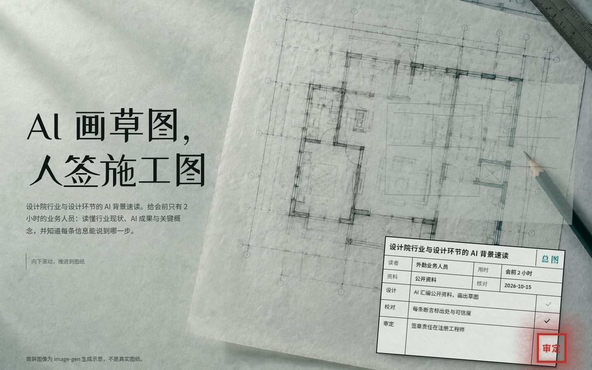
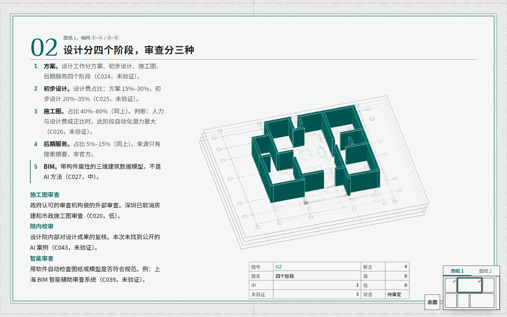
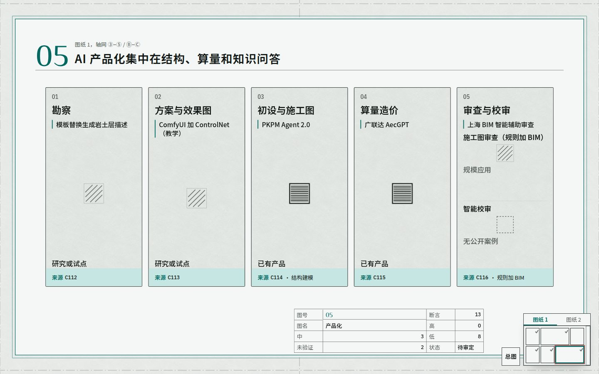
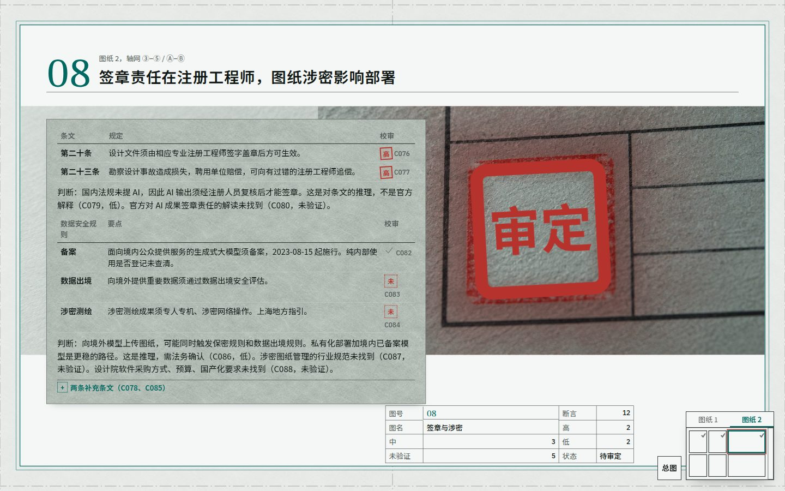
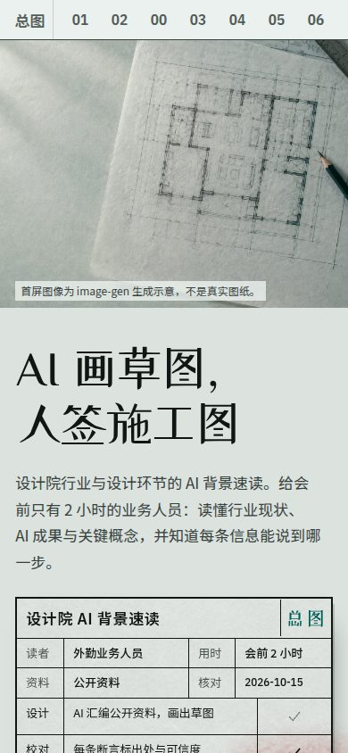
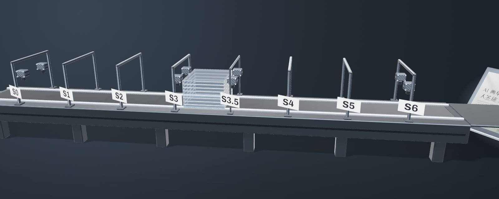
八步把一句话变成页面
八个编号步依次是 S0 到 S6，中间多一个 S3.5。每步留下一个文件，下一步从这个文件接着做。高
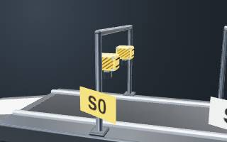
S0接单人工放行逐字抄原话，认出档位词、载体词与点名手法。留下
00-接单.md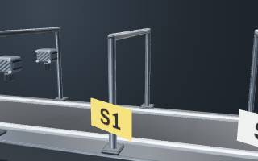
S1载体文件齐全即过取载体档案：视口、字号基准、最小命中区、减少动效开关。留下
01-载体.md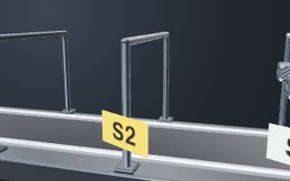
S2蓝图文件齐全即过写根本目标、3 到 7 条工作故事、页面职责卡，再写内容层。留下
blueprint.md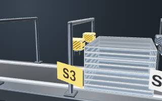
S3艺术指导人工放行产出方向单，含点子、决定、样品三组。留下
direction.md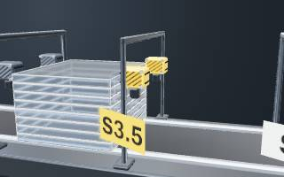
S3.5首屏人工放行只做首屏加一章，与参照板并排，自评 1 到 5 分。留下
FIRST.md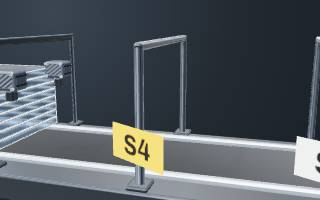
S4页面规划文件齐全即过首屏、每章开场、签名时刻、页脚各至少一项手法。留下
03-页面规划.md- S5制作脚本检查
从成品范例复制再差异化，不从空白令牌起手。留下
index.html 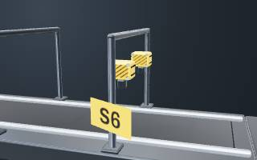
S6验收人工放行脚本检查、截图、盲评、Fable 评审至多 3 轮、用户通读。留下
ROUND-n.md
每一步谁来放行
| 步 | 门 | 查什么 |
|---|---|---|
| S0 接单 | 人工放行 | 原话、载体、点名手法齐全 |
| S1 载体 | 文件齐全即过 | 壳尺寸、字体栈、最小字号、最小命中区四个字段非空 |
| S2 蓝图 | 文件齐全即过 | 每页有职责卡，舞台章不少于总章数的 1/4 |
| S3 艺术指导 | 人工放行 | 只认方向单 HTML。Fable 审方向单。委托人看三选一卡片点头 |
| S3.5 首屏 | 人工放行 | 首屏截图与参照板并排，自评 1 到 5 分，给委托人一张卡片 |
| S4 页面规划 | 文件齐全即过 | 槽位列非空，每行"引用的四维决定"非空 |
| S5 制作 | 脚本检查 | 脚本检查加 defaults-check.py 零命中 |
| S6 验收 | 人工放行 | Fable 判"可交付"，盲评达到及格线 |
你在两处点头，最后通读
委托人不用审八步的全部产物。系统在两处把选择做成卡片：S3 的三选一卡片，S3.5 的首屏卡片。
S3三选一卡片：本页的三个方向
叠片机：页面是一台机器，需求从左进，八层文件压成一页从右出。
代价：3D 建模工作量最大，手机上只看静态图。推荐
只有字：首屏只有大字与颜色，八步用巨大的站号排出来。
代价：首屏没有产品实体，炫技只靠字。
色块章节：每章一整块平涂色，滚动时整屏换色。
代价：换色不解释"怎么做"，没有舞台承载八步。
S3.5首屏卡片：本页第 1 轮
这里像：铝灰无缝底、左上单光、整机 3/4 侧视，左进右出一眼可读。
这里不像：叠片压实后只是一块白板，看不出八层。自评 3 分，改后第 2 轮 4 分。中
S3 你在三张方向卡里选一张。你不在场时，系统按推荐继续，并在报告里写明。
S3.5 你看首屏卡片，对照参照板说出这里像、这里不像。
通读 你读完整页。验收还包括脚本检查、截图、盲评与 Fable 评审。
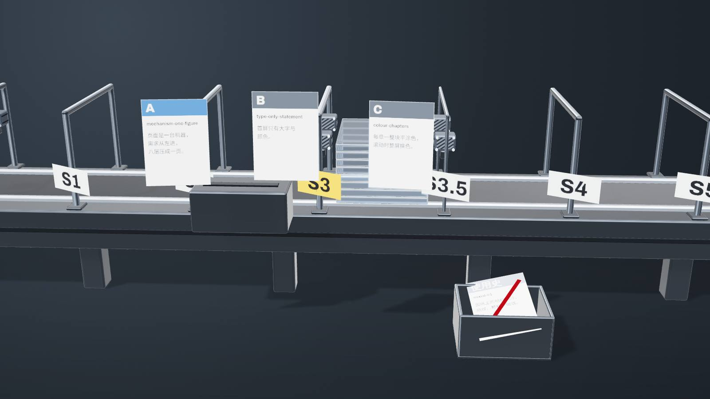
它用八条机制
防止做成模板
不会做成模板不靠承诺，靠机制。先选页面形态，纯瀑布流不是可选项。高
- 点子与发牌先写换题即失效的点子，再由脚本发 3 张卡。
- 库与使用史库里只存数值与路径，用过的组合不复用。
- 检查与盲评默认值命中 2 项退回，盲评说出 3 处不同。
展开八条机制
- 点子先于库：发牌前先盘点主题，方案含一条换题即不成立的点子。
- 发牌不检索：脚本发 3 张方向卡，模型只在候选里定。
- 使用史跨项目：同一组合在若干个项目内不复用。
- 禁用清单每项目重写：至少 2 条来自上一个项目。
- 库里存决定：每张卡有数值、参照与代码路径，不存形容词。
- 默认值检查：Defaults 禁令共 12 条，命中 2 项退回。
- 可区分性盲评：与上一个项目并排，说出 3 处不同的决定。
- 机制示例不带皮肤：示例只给技术，皮肤来自方向单。
发牌：3 张方向卡两两至少 3 个轴不同。使用史里用过的组合进废料槽。高
- Amechanism-one-figure：页面是一台机器
- Btype-only-statement：首屏只有大字
- Ccolour-chapters：每章一块平涂色
- 使用史上一项目的图纸相机加纸纹、颗粒、玻璃
机制示例只给技术。每个示例是单文件 HTML，文件头写明 Reduce Motion 退路。高
已交 21 个机制示例的名称与一句机制
webgl-scene程序化分层板片与节点连线，滚动推镜头fluid-noise全屏片元着色器 fbm 噪声grainSVG 静态颗粒，页内算正文对比度glassbackdrop-filter 玻璃，只用于浮层scroll-storyScrollTrigger 固定舞台，三章 SVG 状态切换image-sequencecanvas 按滚动进度绘 24 帧序列scroll-camera-path相机沿曲线穿过四个站点css-scroll-timeline零 JS 的入场与进度条fluid-ink-pointer染料双缓冲加指针速度capability-tiering探测 6 项信号，判三档depth-parallax-image按深度图位移的视差图gltf-model-stage加载本地 glb 模型的舞台mesh-gradient5 个控制色融合的着色器渐变instanced-field3000 根柱按噪声场起伏pinned-3d-scrubpin 一屏，scrub 驱动三段状态raymarch-backdropSDF 光线步进背景lenis-webgl-sync平滑滚动与 3D 单循环同步variable-font-axis滚动驱动可变字体轴splittext-kinetic按字入场加路径文字blender-headless-glbBlender 后台程序化建模导出 glbcross-doc-view-transition跨文档共享元素转场
炫技有边界：四条禁区加四项底线
炫技是下限，不是上限。禁区管位置与意义，底线管所有人都能看。
- S3 艺术指导禁 1 没有概念承载说不出手法表达主题的哪一点，就不用它。
- S3.5 首屏禁 2 挡住阅读动效与正文重叠，或正文对比低于 4.5:1。
- S4 页面规划禁 3 同一手法超过 2 次同一张表现形式卡在规划里出现 3 次以上。
- S6 验收禁 4 出现在阅读区阅读区只允许反馈与状态动效。高
护栏只标位置，不演示被禁止的效果。护栏的工位是本页的示意，标出每条禁区最先写进哪个文件。
四项底线，任何档位都不退
每档至少一项材质或舞台类表现形式，show 档首屏必须是图像或 3D。底线管它们不伤到读者。高
Reduce Motion
系统开了减少动效，页面直接停在终态。内容全部可见，无位移、无循环、无平滑滚动。
对比度
正文 4.5:1，大字与图形 3:1。浅色与深色两种模式都算。
可读性
中文正文 16 到 18 px，行高 1.7 到 1.9。图内中文不小于 12 px。
键盘
每个操作都能用键盘到达，焦点环可见。原生光标不隐藏，Ctrl+F 照常可用。
浮夸度判定表的 9 个维度与过量线
| 维度 | 过量（不通过） |
|---|---|
| 动效占屏比例 | 超过 60% |
| 同屏同时运动的元素数 | 超过 8 个 |
| 首屏可读内容 | 标题、一句说明、主操作有一项读不到 |
| 首屏出现内容的时间 | 4G 中端手机上超过 3 秒 |
| 对正文的遮挡 | 遮挡正文，或正文对比不足 4.5:1 |
| 无限循环动效数 | 超过 2 个，或不可暂停 |
| 滚动劫持 | pin 总屏高超过 5 屏，或到不了页脚 |
| 闪烁 | 1 秒内超过 3 次闪光 |
| Reduce Motion 退路 | 没有退路 |
说清哪些还没验证
本页写的数字都来自仓库文件。下列项文件里没有，或没有测。
| 状态 | 项 | 来源 |
|---|---|---|
| 缺口 | 更炫的成品范例还没有。本页展示的成品 mixed-01 是第一个范例。 | C034 |
| 未测 | mixed-01 本机未验：真实 GPU 帧率、Safari、Firefox、768 到 1279 宽。 | C035 |
| 缺口 | 读者画像是不懂设计的委托人，这个画像没有访谈记录。 | C040 |
| 缺口 | 委托人采用后的业务结果，如时间、成本、转化，资料里没有。未验证 | C042 |
| 已测 | 对外口径统一为"八步 SOP"，SKILL.md 与 sop.md 已一致。高 | C041 |